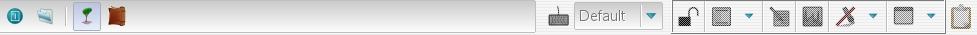
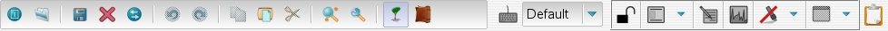
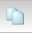
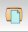
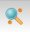
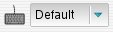

When there is no file opened, you just can: quit TranscriberAG, open a file, show/hide the explorer or consult the global dictionary.
When a file is opened, then menubar looks like this:
Tool bar buttons are described hereafter:
| Quit button quits Transcriber AG. | |
| Open button opens a file. | |
|
Save button saves current file. |
| Close button closes the currently open file. | |
| Refresh button refreshes the text and audio waveform of the currently open file. | |
| Undo button cancels previous editing action. | |
| Redo button restores a previously canceled editing action. | |
|  | Copy button copies selected text area from annotation editor to selection buffer. |
|  | Paste button copies selection buffer contents to annotation editor at current text cursor position. |
| Cut button copies selected text area to selection buffer and deletes it from annotation editor. | |
|  | Search button opens Search dialog popup, either as a dialog box or as a tool bar at editor's bottom line |
| File Properties button opens the File Properties dialog for the current file. | |
| Show/Hide explorer button shows or hides the File Explorer. | |
|
Global speakers dictionary button opens the Global Dictionary . |
|  | Keyboard language button allows to set current input language for the keyboard (shortcut: <ctrl+shift+page up/down>). |
|
File locked button indicates current file editability state: when shown as an open padlock, then current file can be updated. When shown as a closed padlock, then current file is only readable. By clicking on the button, one can change the editability state of the editor buffer BUT NOT OF THE FILE. This is useful to avoid modifying a writable buffer, when browsing it for instance (shortcut: <F6>). |
|
Editor qualifiers tags displayed button allows to show or hide qualifier tags in the text widget (shortcut: <F7>). Clicking on the button allows to hide or display the qualifiers. When hidden mode is on, clicking on the arrow button on the right allows to switch between modes (hide all qualifiers, only events, only entities, ...) |
|
Text synchronized to signal button allows to activate/deactivate automatic positioning of the text cursor relatively to the current signal offset. When shown as illustrated, text is synchronized with signal, which means that text cursor "follows" the signal cursor. When shown crossed with a red line, text is not synchronized with the signal (shortcut: <F8>). |
|
Signal synchronized to text button allows to activate/deactivate automatic positioning of the signal cursor relatively to the current text cursor position. When shown as illustrated, signal is synchronized with text, which means that signal cursor "follows" the text cursor. When shown crossed with a red line, signal is not synchronized with the text (shortcut: <F9>). |
|
Highlight button when activated (shows as illustrated), the current segment of text in the annotation editor is highlighted. When shown crossed with a red line, text highlighting is disabled. For a stereo file with multiple views, one can refine highlighting options by clicking on the arrow button on the right, and select in which view to activate highlight (shortcut: <F11>). |
|
Unique editor button (only with stereo files). Allows to switch between various display modes for stereo files: a single view displaying annotations for both tracks, two "dual" views (one for each track) side by side, a single view for one of the tracks. Clicking on the "terminal" icon allows to switch between single / dual view. When in single view, clicking on the arrow button on the right allows to select between merged / track1 / track2 modes (shortcut: <F12>). |
| Clipboard button Show / hide Clipboard window (shortcut: <shift+alt+c>). | |
| remark: The classic option icons (such as open, save, copy, paste) depend on the Gtk theme used by your system, and can differ from the pictures of the current pages. |